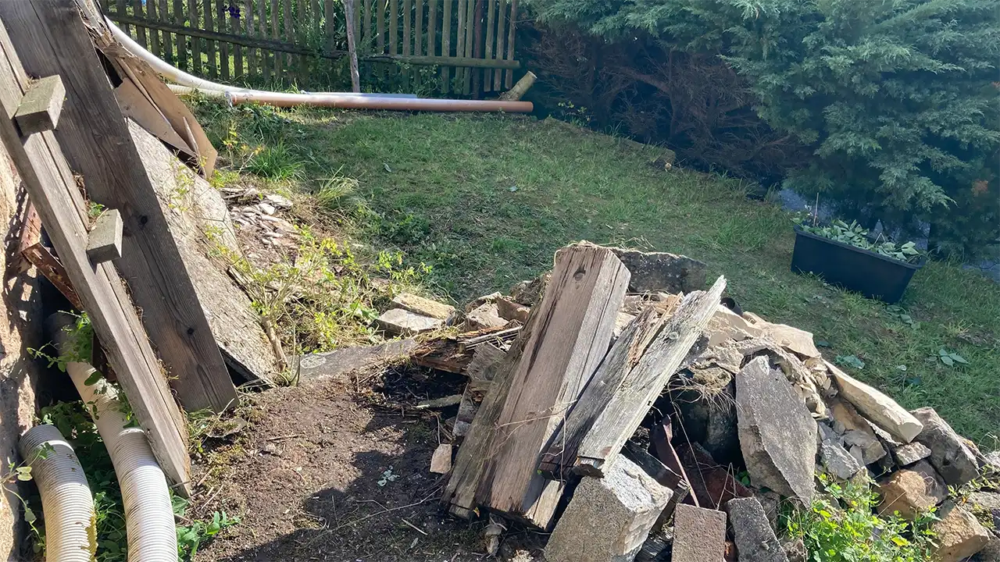
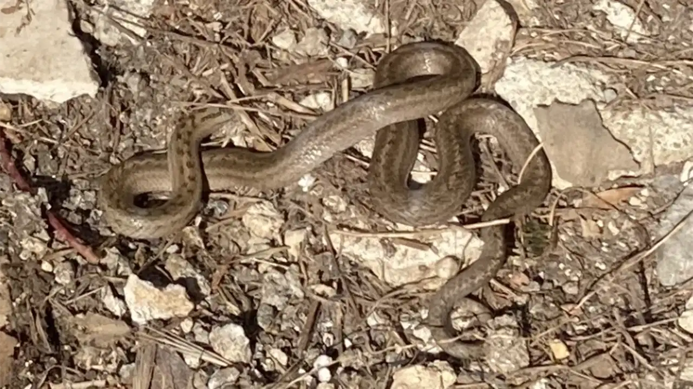
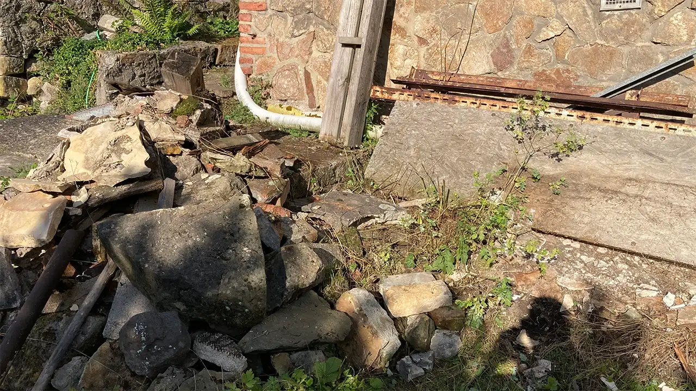
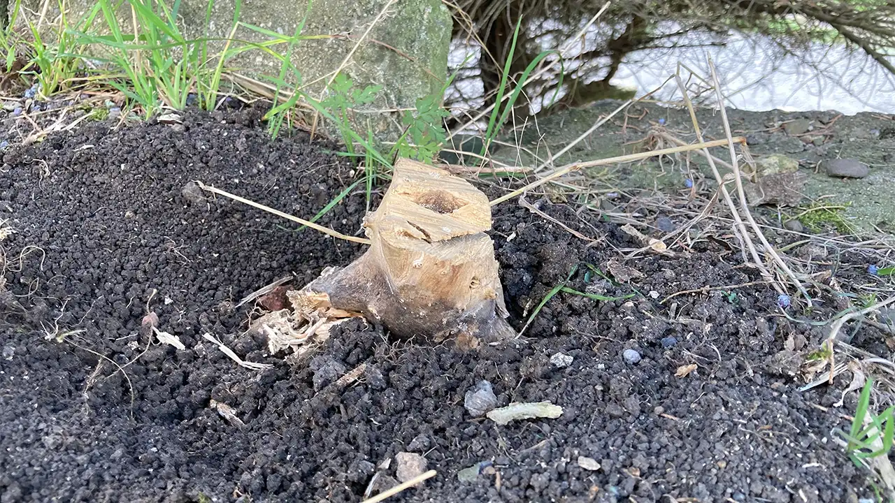
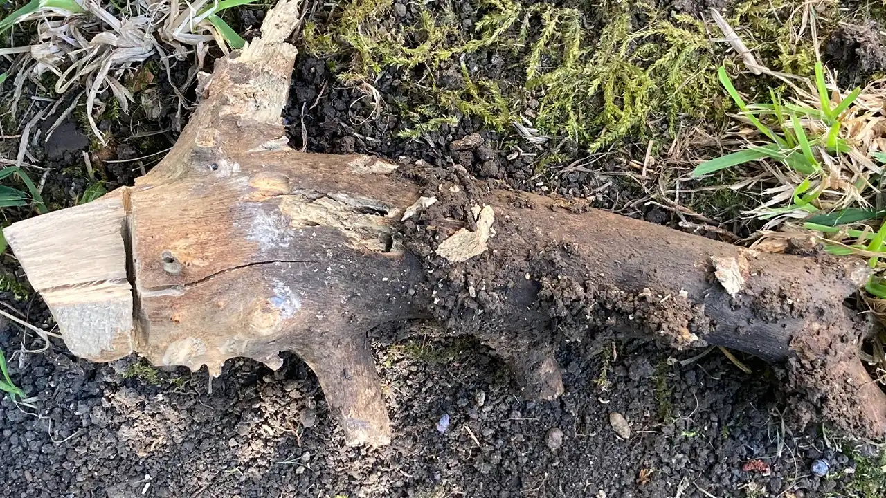
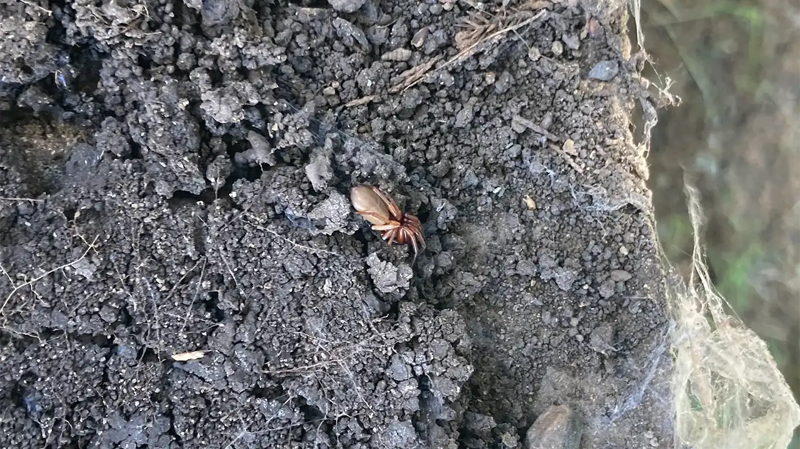
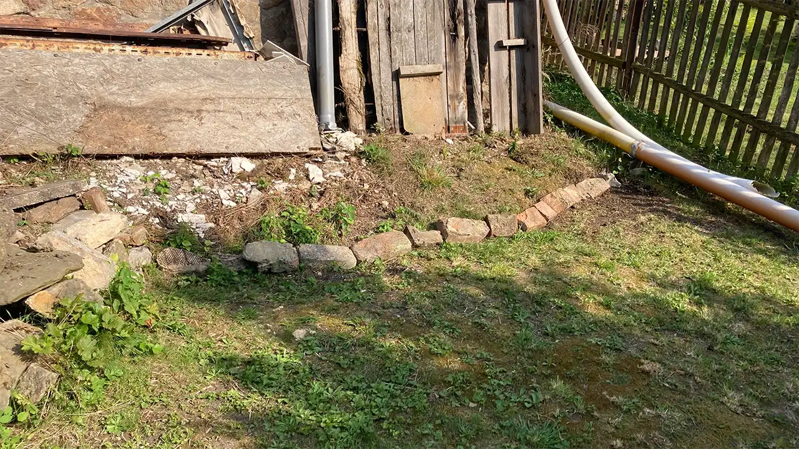
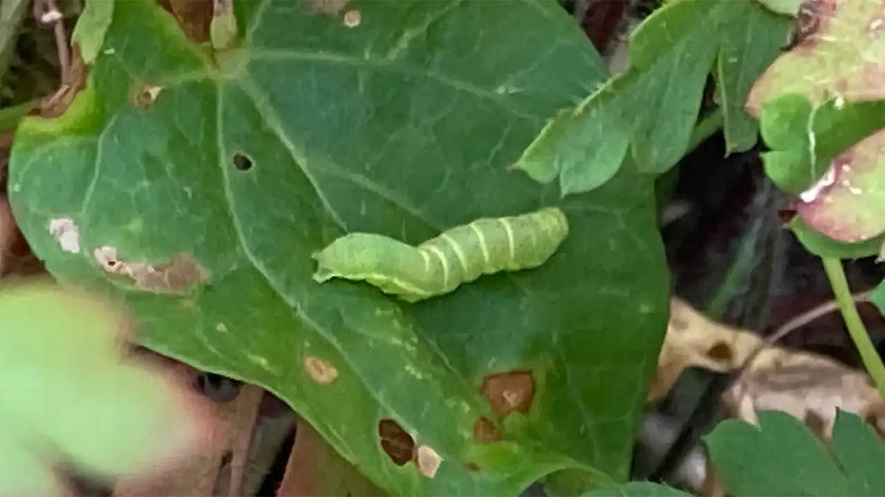

Zvídavý občan
Zvídavý občanZahrada #1 - Představení Mé Zahrady
Chtěl bych vám představit jeden můj větší projektík a to moji zahradu. Není přímo moje, jenom jsem si ji přivlastnil u nás doma. Na začátku byla děravá a zarostlá. Sice se již předtím "pravidelně" sekala, ale nějak se na to nekladl důraz. Tím pádem na ní vyrostly velký drny trávy a nebylo to hezký. Také přístupová cesta více méně neexistovala. Přistupovalo se na ten kus zahrady skrze zídku vedle schodů. Tudíž jsem se rozhodl to trochu zvelebit, abych měl co ukazovat :D Moc věcí jsem nedokumentoval, ale k shrnutí jsem posekal trávu, vytrhal plevel a přeskládal pár věcí a postavil provizorní schody.
Toto je pravděpodobně vaše první fotka mé zahrady. Popíši. V levo dole jsou žluté trubky z okapu, které vedou do kupy desek a železa, které je opřené o zeď baráku. Na konci zdi baráku je další pár opkapů, kde jeden končí relativně blízko baráku jako první dva (na této fotce je prodloužen trubkou, ta trubka tam už není) a druhý okap vede přes celou zahradu a vede vodu dolů před zídku. Na konci červeného okapu je uříznutý strom. Ten tam donedávna stál, ale já s maminkou na něj máme alergii, takže jsem ho pokácel. Nyní máme i více slunce. Před první stranou se tyčí keř společně s pár borovicema, které nejdou vidět. Na pravé straně obrázku jsou schody, které nejdou vidět. A to je moje zahrádka :)
Při úklidu desek, které byly položené před stěnou baráku na trávě jsem narazil na tuhle kamarádku :)
Ještě k těm schodům, které jsem provizorně postavil, nějak takhle vypadají. Nyní tam není už ta zeleň.
A to bylo než jsem začal psát. Nyní dnes jsem se vrhl do dalších úprav. Jako první jsem upravil povrch u keřů dole, jelikož tam byl malej kmínek, který vždy bránil v sekání trávy a dělal to velice složité. Tak hezky poslušně šel ven a zem po něm jsem vyrovnal.
 Při rovnání země jsem narazil pod jednou dlaždicí z betonu na tohodle pavouka. Nemám rád pavouky, takže jsem ho vyfotil a smetl ze zahrady :D Ale zajímavý pavouk.
Jedna z nejvíc otravných věci na této zahrádce je sekání u svahu na boku zahrady u zdi baráku. Je to samej kámen a na konci je žlab. Kde jsou další kameny. Jelikož je to celý šutr více méně, tak už do budoucna plánuji tam postavit skalku s levandulema a dalšíma krásnýma kytkama, co pomáhají včelkám a odpuzují jinou havěť. Ale mimo plány na skalku jsem žlab před svahem vyrovnal a svah jsem hezky oddělil od zahrádky zídkou ze starých kamenů a cihel. Ano cihel z té hromady :D
Do budoucna mám v plánu rozhodně ještě dost věcí, zde je pár z nich:
- Skalka
- Květiny
- Hezký trávník
- Odklidit všechen bordel
A rozloučení od housenky.
